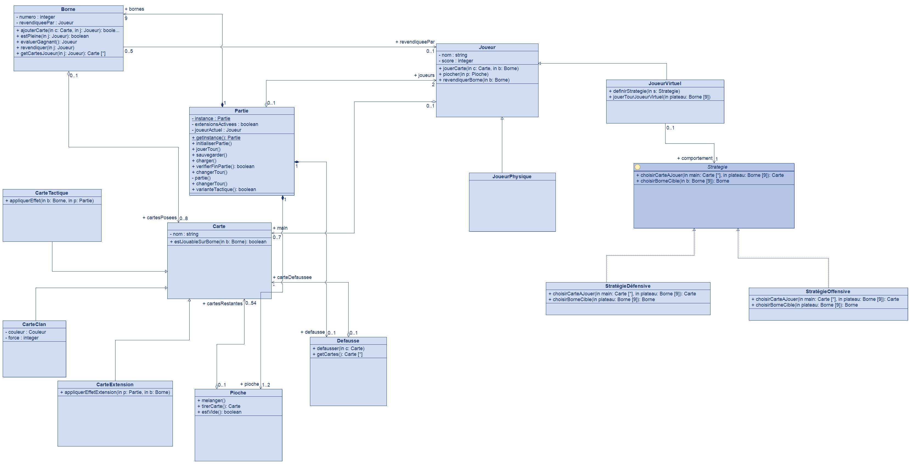

Projet LO02 · Phase 1 · Modélisation UML
Schotten Totten
Lelio Buton & [nom du binôme] · Soutenance 1 · semaine du 19 octobre 2026
Plan de la soutenance
Notre parcours
Introduction
Le projet tel que nous l'avons compris
I
Diagramme de classes
De quoi est fait le logiciel ? Éléments, relations, quatre patrons
II
Diagrammes de séquence
Comment se déroule un tour de jeu ?
Conclusion
Ce qui est sûr, ce qui peut bouger au développement
LO02 · Schotten Totten · Phase 1
Introduction
Le projet tel que nous l'avons compris
- Version électronique de Schotten Totten à 2 joueurs : physiques, virtuels, ou un mélange
- Le joueur virtuel suit une stratégie simple mais cohérente
- Moteur testable en ligne de commande, puis interface graphique (MVC, deux vues)
- Extensions : de nouvelles cartes, activées ou non au début de la partie
- Toutes les variantes sauf « Experts » (donc la variante tactique)
- Sauvegarde et reprise d'une partie ; architecture modulaire et extensible
1
Modélisation UMLSoutenance semaine du 19 octobre
2
Cœur de l'applicationLigne de commande · 14 décembre
3
Interface graphique (MVC)4 janvier 2027
⇪
Remise des fichiersVendredi 15 janvier 2027
LO02 · Schotten Totten · Phase 1
Introduction
Le jeu en une image
Un tour de jeu
- Poser 1 carte devant une borne (3 cartes max par camp)
- Revendiquer les bornes dont on bat l'adversaire
- Piocher pour revenir à 6 cartes
Une borne se revendique avec la meilleure formation de 3 cartes.
Les formations, de la plus forte à la plus faible
1
Suite couleur3
4
5
2
Brelan7
7
7
3
Couleur2
5
9
4
Suite4
5
6
5
Somme1
6
8
Contrôler 5 bornes n'importe où sur la frontière, ou 3 bornes adjacentes.
LO02 · Schotten Totten · Phase 1
Introduction
Des besoins aux choix de conception
| Joueur physique ou virtuel, combinables | → | Classe abstraite Joueur + Stratégie |
| Variantes et extensions = de nouvelles cartes | → | Hiérarchie Carte + Fabrique |
| Formations et effets spéciaux qui évoluent | → | Énumération Combinaison + Visiteur |
| Une seule partie, que l'on peut sauvegarder | → | Partie en Singleton |
Les quatre patrons de l'étude sont chacun justifiés par un besoin du sujet, pas ajoutés pour le principe.
LO02 · Schotten Totten · Phase 1
I
Diagramme de classes
De quoi est fait le logiciel ?
I
Diagramme de classes
Vue d'ensemble : 22 éléments, 4 patrons
Le plateau.
Partie possède 9 Borne, la Pioche et la DefausseLes joueurs. Physique ou virtuel, ce dernier piloté par une
StrategieLes cartes. Clan, Tactique (3 catégories) et Extension
Deux blocs annexes. La Fabrique crée les cartes, le Visiteur évalue les formations
LO02 · Schotten Totten · Phase 1
I
Diagramme de classes · le plateau
Partie, Bornes, Pioche, Défausse
PartieChef d'orchestre : initialise, enchaîne les tours, vérifie la fin, sauvegarde et charge.
BorneUne des 9 tuiles de la frontière : cartes de chaque camp, revendication, évaluation.
PiocheMélanger, tirer, savoir si elle est vide. 1 à 2 pioches (Clan, Tactique).
DefausseCartes écartées par les ruses, consultable à tout moment.
CombinaisonÉnumération des 5 formations, de la plus forte à la plus faible.
Composition ◆ : bornes, pioche et défausse n'existent pas sans la partie. Agrégation ◇ : les cartes survivent à une main.
LO02 · Schotten Totten · Phase 1
I
Diagramme de classes · les joueurs
Un joueur, deux façons de jouer
Joueur (abstraite)Nom, score.
jouerTour(p) est abstraite : chaque type de joueur décide comment il joue.JoueurPhysiqueLes choix viennent de l'utilisateur (via le contrôleur, hors du modèle).
JoueurVirtuelDélègue ses choix à une
Strategie, changeable en cours de partie.La main0 à 7 cartes : 6 de base, 7 en variante tactique.
Partie appelle jouerTour() sans savoir quel type de joueur elle manipule.LO02 · Schotten Totten · Phase 1
I
Diagramme de classes · les cartes
Une hiérarchie de cartes extensible
Carte (abstraite)
estJouableSurBorne(b), et accepter(v) pour le Visiteur.CarteClan + CouleurForce de 1 à 9 et couleur (énumération) : 54 cartes.
CarteTactique (abstraite)
appliquerEffet(b, p) : 10 cartes en 3 catégories.TroupeEliteJoker, Espion, Porte-Bouclier : jouées comme une carte Clan, valeur choisie à la revendication.
ModeCombatColin-Maillard, Combat de Boue : changent la règle d'une borne.
RuseChasseur de tête, Stratège, Banshee, Traître : agissent sur la partie.
CarteExtensionPoint d'accroche des futures extensions.
LO02 · Schotten Totten · Phase 1
1
Patron de conception 1/4
Singleton Partie
ProblèmeUne seule partie à la fois, accessible du moteur comme des vues.
SolutionConstructeur privé
Partie(), attribut statique instance, accès par getInstance().Limite : les testsÉtat global partagé : prévoir une réinitialisation entre deux tests.
Limite : la sauvegardeRecharger une partie sérialisée créerait une 2e instance.
charger() restaure donc l'état dans l'instance existante.LO02 · Schotten Totten · Phase 1
2
Patron de conception 2/4
Stratégie Joueur virtuel
ProblèmeLe joueur virtuel doit choisir quoi jouer, avec une stratégie simple, cohérente et interchangeable.
SolutionInterface
Strategie : choisirCarteAJouer et choisirBorneCible. JoueurVirtuel la détient et la délègue.StrategieDefensiveRenforce les bornes déjà engagées, ne revendique que lorsqu'elle est sûre.
StrategieOffensiveJoue ses cartes fortes sur les bornes adverses, revendique dès que possible.
IntérêtAjouter une stratégie = ajouter une classe, sans toucher au reste.
Carte et borne choisies en deux appels : risque d'incohérence. À regrouper en un seul « coup » en phase 2.
LO02 · Schotten Totten · Phase 1
3
Patron de conception 3/4
Fabrique Création des cartes
ProblèmeCréer 54 cartes Clan, 10 Tactique et des cartes d'extension selon les options, sans que
Partie connaisse chaque classe de carte.Solution
FabriqueCartes : creerCartesClan, creerCartesTactique, creerCartesExtension.Usage
Partie appelle la fabrique selon varianteTactique et extensionsActivees.Choix de simplicitéFabrique simple : pas de hiérarchie de fabriques (3 classes de plus pour un gain faible). Une interface reste possible si les extensions se multiplient.
LO02 · Schotten Totten · Phase 1
4
Patron de conception 4/4
Visiteur Évaluation
ProblèmeCe qu'une carte vaut dans une formation dépend de son type (Clan : sa force ; Joker : valeur choisie ; Colin-Maillard : somme seule). Sans patron :
instanceof en cascade dans Borne.Solution
Carte.accepter(v) appelle v.visiter(this) : le type réel de la carte choisit la méthode (double dispatch).EvaluateurCombinaisonConcentre la logique et produit une
Combinaison.OuvertureNouvelle opération (sauvegarde, affichage) = nouveau visiteur, sans toucher aux cartes.
Une nouvelle classe de carte oblige à modifier les visiteurs. Acceptable : les types de cartes sont stables. Pour
appliquerEffet, le polymorphisme simple suffit.LO02 · Schotten Totten · Phase 1
I
Diagramme de classes · évolution
Du diagramme initial au diagramme final
Version 1 : modélisation initiale

ConservéJoueur abstrait, Stratégie, Singleton, structure Partie/Borne/Pioche/Défausse et multiplicités (0..8, 1..2, 0..7 justifiées par les règles).
Tour de jeu polymorphe
Joueur.jouerTour() abstraite, au lieu d'une méthode propre au joueur virtuel.Cartes Tactique découpéesTroupeElite, ModeCombat, Ruse, d'après les 3 catégories des règles.
Combinaison, CouleurDeux énumérations qui manquaient ;
Carte devient abstraite.NettoyageConstructeur privé
Partie(), doublon changerTour supprimé, noms sans accents.AjoutsPatrons Fabrique et Visiteur.
LO02 · Schotten Totten · Phase 1
II
Diagrammes de séquence
Comment se déroule un tour de jeu ?
II
Diagrammes de séquence
Le scénario choisi
Un tour d'un joueur virtuel
- Il traverse le moteur de bout en bout : choix, pose, revendication, pioche, fin de tour
- Il met en jeu la Stratégie
- Deux diagrammes compagnons : l'évaluation d'une borne (Visiteur) et l'initialisation (Singleton Fabrique)
Lire un diagramme de séquence
| Ligne de vie | un objet, pendant le scénario | |
| Flèche pleine | appel de méthode | |
| Flèche pointillée | valeur retournée | |
alt opt loop | si/sinon, optionnel, répété | |
ref | renvoie à un autre diagramme |
LO02 · Schotten Totten · Phase 1
II
Diagrammes de séquence · principal
Le tour d'un joueur virtuel
1 · Choisir le coup
Partie demande à JoueurVirtuel de jouer ; il délègue à sa Strategie le choix de la carte et de la borne.2 · Jouer la carteSi elle est jouable sur cette borne, elle y est posée ; sinon le joueur passe.
3 · RevendiquerPour chaque borne non revendiquée, tentative de revendication. L'évaluation est détaillée dans un second diagramme (
ref).4 · PiocherSi la pioche n'est pas vide, le joueur pioche.
5 · Fin de tour
Partie vérifie la fin ; sinon elle change de joueur.LO02 · Schotten Totten · Phase 1
II
Diagrammes de séquence · compagnon
Évaluer une borne Visiteur
1 · Un évaluateur par borne
Borne crée un EvaluateurCombinaison et lui confie les cartes de chaque joueur.2 · Double dispatchPour chaque carte :
accepter(ev) puis visiter(this). Le type réel de la carte choisit la méthode.3 · ComparaisonLa formation la plus forte l'emporte ; en cas d'égalité, la somme, puis le premier à avoir posé 3 cartes.
LO02 · Schotten Totten · Phase 1
II
Diagrammes de séquence · compagnon
Démarrer une partie Singleton Fabrique
1 · Obtenir la partie
getInstance() crée la partie au premier appel, puis renvoie toujours la même instance.2 · Fabriquer les cartesLes cartes Clan toujours ; Tactique et Extension selon les options choisies.
3 · Mélanger et distribuerChaque joueur pioche 6 cartes (7 en variante tactique).
LO02 · Schotten Totten · Phase 1
II
Diagrammes de séquence
Chaque message est une méthode du diagramme de classes
choisirCarteAJouer(...) | → | Strategie ✔ |
ajouterCarte(c, j) · revendiquer(j) | → | Borne ✔ |
tirerCarte() · estVide() | → | Pioche ✔ |
accepter(ev) · visiter(this) | → | Carte · VisiteurCarte ✔ |
creerCartesClan() | → | FabriqueCartes ✔ |
Un message a → b : m() suppose une relation entre a et b et une méthode m() dans b.
LO02 · Schotten Totten · Phase 1
Conclusion
Ce qui est sûr, ce qui peut bouger
Aspects sûrs
- Hiérarchies
JoueuretCarte - Structure
Partie/Borne/Pioche/Defausse - Stratégie du joueur virtuel
- Énumérations
CombinaisonetCouleur
Susceptible d'évoluer
- Signature de
Strategie: carte et borne en un seul coup - Détail des effets des ruses et des modes de combat
- Mécanisme de sauvegarde face au Singleton
- Répartition fine des méthodes entre
PartieetJoueur
LO02 · Schotten Totten · Phase 1
Merci de votre attention
Questions ?
Prochaine étape : le cœur de l'application en ligne de commande